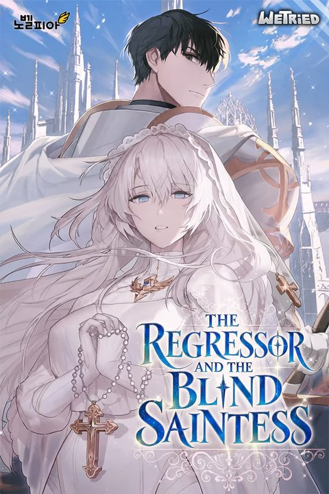

The Regressor and the Blind Saintess
Synopsis
A battered fighter and a saint who secretly gave up her powers meet in the slums and slowly come to trust each other.
The Shack in the Slums
Summary of chapter 1
Vera wakes in agony inside a leaking shack in the slums, the place he grew up. He remembers that he was dying from a curse built up from his past deeds, yet he can no longer feel it, and he has no idea who rescued him.
His rescuer turns out to be a blind woman with a scarred face and white hair. Around her neck hangs a platinum rosary that only the highest figure of the Holy Kingdom could own. Vera realizes she must be the saint who was reported dead after the final battle against the Demon King.
She calmly admits that the saint is dead, and that she is simply a wretch of the slums who gave her holy power back. Vera assumes she wants him silent, or dead, but she says she has no reason to kill him and only wants him to rest and heal. She prays quietly, and when he mockingly calls her “saint”, she gently corrects him: her name is Renee.